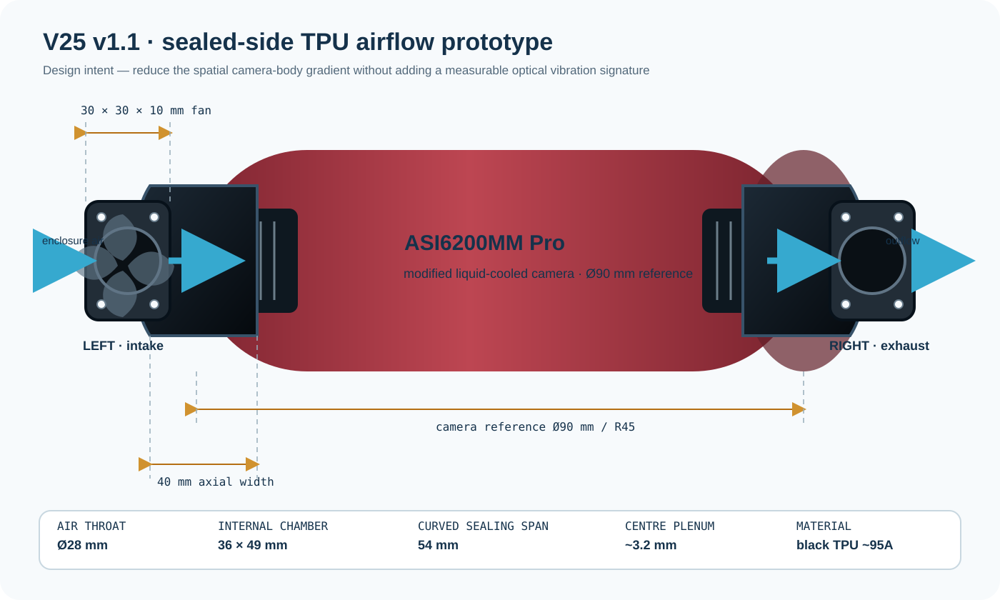

30 × 30 × 10 mm · 5 V · 45 mA · 0.23 W · 2.5 CFM · 10.2 dBA
Current engineering phase · V25
Print submittedREV 1.1 · 06 OCT 2026
Sealed TPU camera-airflow prototype.
A removable, low-power push–pull airflow system designed to test whether the spatial temperature difference across the modified ASI6200MM-Pro camera can be reduced without introducing detector or optical-path jitter.
No performance result yet. Fans are ordered and black TPU mounts are in fabrication. Physical fit, vibration and powered thermal/optical tests remain outstanding.

01 / Specification
A test instrument, not a finished product
The design is deliberately small, removable and measurable.
Every feature serves the experimental question: route air through the camera side vents, minimise bypass, avoid hard contact and preserve a clean baseline if the prototype is rejected.
40 mm axial width · 54 mm curved span · 1.0 mm side-sealing skirt
Ø28 mm clear throat · 36 × 49 mm chamber · ~3.2 mm centre plenum
Ø2.85 mm pilot holes with soft camera-facing tips
| Camera reference | Ø90 mm / R45 |
|---|---|
| Measured vent | ~35 mm axial × ~45–50 mm curved span |
| Mount envelope | 40 mm axial × 54 mm curved span |
| Internal chamber | 36 × 49 mm |
| Fan-hole pitch | 24 mm |
| Clear airflow throat | Ø28 mm |
| Skirt clear opening | 38 × 52 mm |
| Nominal inner radius | 45.25 mm with compliant sealing ribs |
02 / Airflow architecture
One intervention, two mirrored roles
Push through the left vent. Pull through the right.
The side skirt reduces obvious bypass around the plenum while the camera-facing chamber remains open over the measured grille. The design is not described as airtight until fitted to the real camera.
Enclosure air
LEFTIntake fan2.5 CFM nominal
Spatial field under testCamera bodyexternal PT104 left · rear · right
RIGHTExhaust fanmatched 30 mm unit
Enclosure return
CAD path verified
The Ø28 mm bore is applied after the full geometry union so the fan-deck airflow path remains clear.
Clamp location checked
Nominal screw contacts land outside the manually measured grille in both axial and curved directions.
Physical interface pending
TPU compression, printer tolerance, local camera geometry and powered vibration require real-hardware validation.
03 / Validation protocol
Fit → baseline → isolate → combine
The first powered test is not the first test.
The sequence protects both the camera and the evidence. Each stage has to pass before the next introduces airflow or vibration.
- AGate
Fit only · fans unpowered
Verify vent centring, clamp contact, cable/blade clearance and retention. Do not tighten enough to deform the housing.
- BBaseline
Mount-only baseline
Record camera-surface temperatures, detector dX/dY and IDS OPL with printed mounts installed and fans off.
- CIsolate
One fan at a time
Run left intake and right exhaust separately to expose direction-specific thermal and vibration effects.
- DValidate
Push–pull pair
Operate both fans, compare matched windows and reject the arrangement if a new periodic optical signature appears.
Thermal and optical improvement together.
- smaller left–rear–right camera-surface spread;
- no increase in dX/dY high-frequency noise;
- equal or better OPL stability;
- no new fan-speed or mount-resonance signature.
Reject unsafe or ambiguous configurations.
- housing interference or insecure retention;
- fan blade/cable contact;
- increased detector or OPL jitter;
- unexpected thermal excursion or condensation risk.
Public engineering files